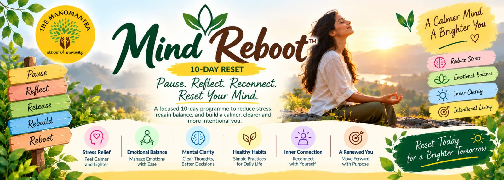
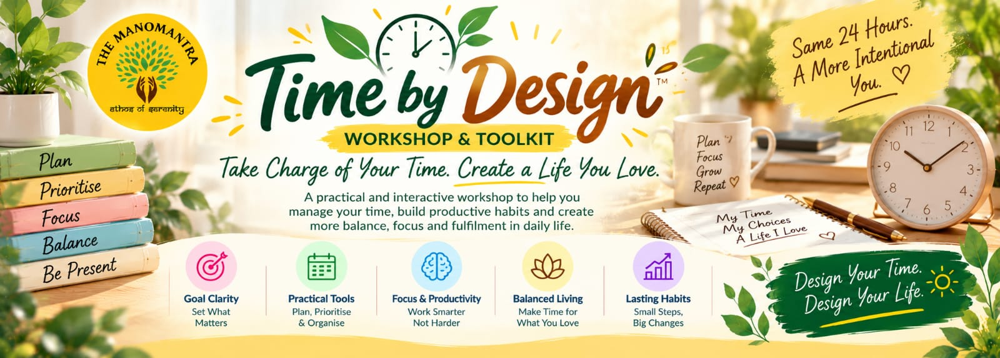
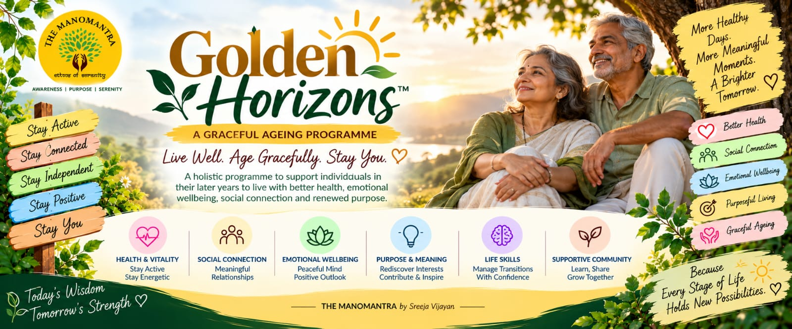
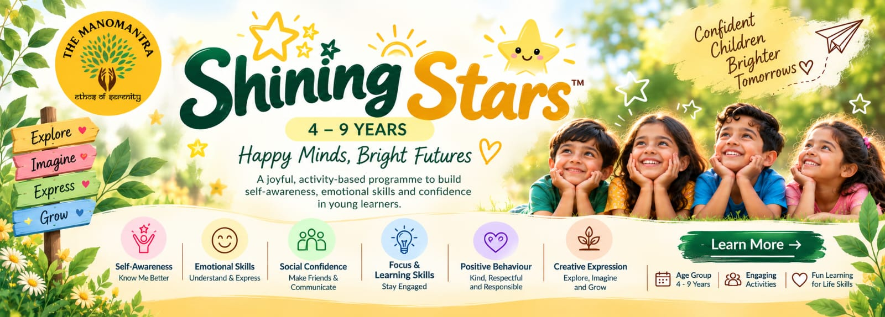
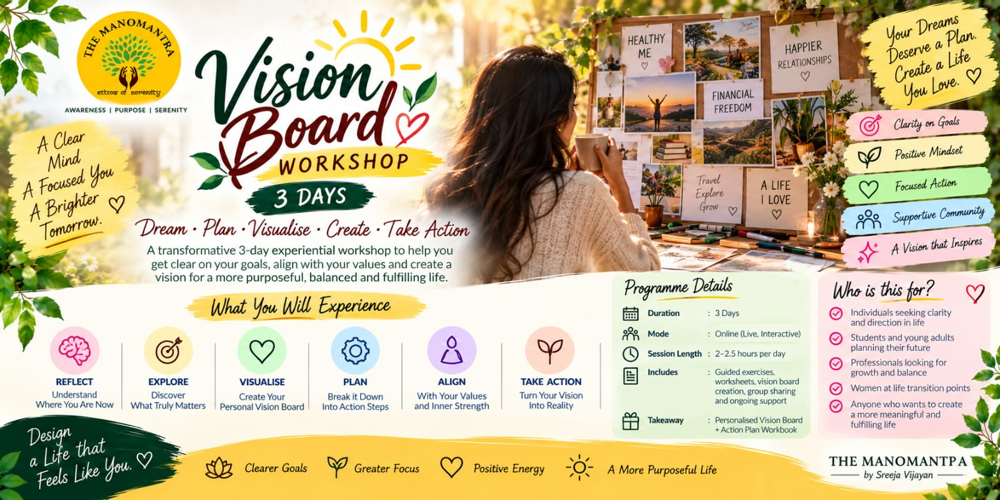
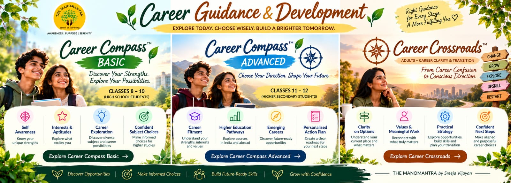
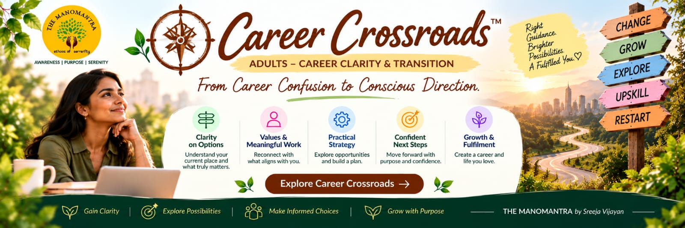
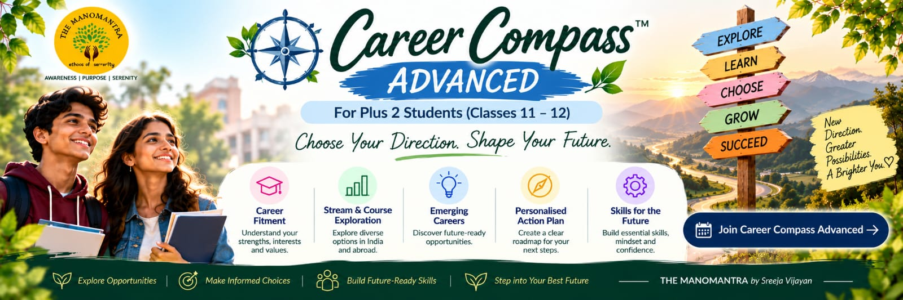

Imposter to Impact
assets/images/programme-posters/imposter-to-impact-poster.jpegThese are the 18 programme posters supplied for the website update. The original poster images are retained without AI-generated replacements. Six matching programme cards in programs.html and programs1.html now use the supplied posters. The remaining posters are included as ready-to-use assets; their programme pages/cards should be matched only after confirming the programme naming and placement.
assets/images/programme-posters/imposter-to-impact-poster.jpeg
assets/images/programme-posters/mind-reboot-poster.jpeg
assets/images/programme-posters/time-by-design-poster.jpeg
assets/images/programme-posters/homecoming-poster.jpeg
assets/images/programme-posters/generation-bridge-poster.jpeg
assets/images/programme-posters/heartcode-poster.jpeg
assets/images/programme-posters/golden-horizons-poster.jpeg
assets/images/programme-posters/shining-stars-poster.jpeg
assets/images/programme-posters/advanced-relationship-mastery-poster.jpeg
assets/images/programme-posters/vision-board-workshop-poster.jpeg
assets/images/programme-posters/roots-to-wings-poster.jpeg
assets/images/programme-posters/confident-roots-poster.jpeg
assets/images/programme-posters/the-clarity-shift-poster.jpeg
assets/images/programme-posters/design-your-life-poster.jpeg
assets/images/programme-posters/career-guidance-development-poster.jpeg
assets/images/programme-posters/career-compass-basic-poster.jpeg
assets/images/programme-posters/career-crossroads-poster.jpeg
assets/images/programme-posters/career-compass-advanced-poster.jpeg